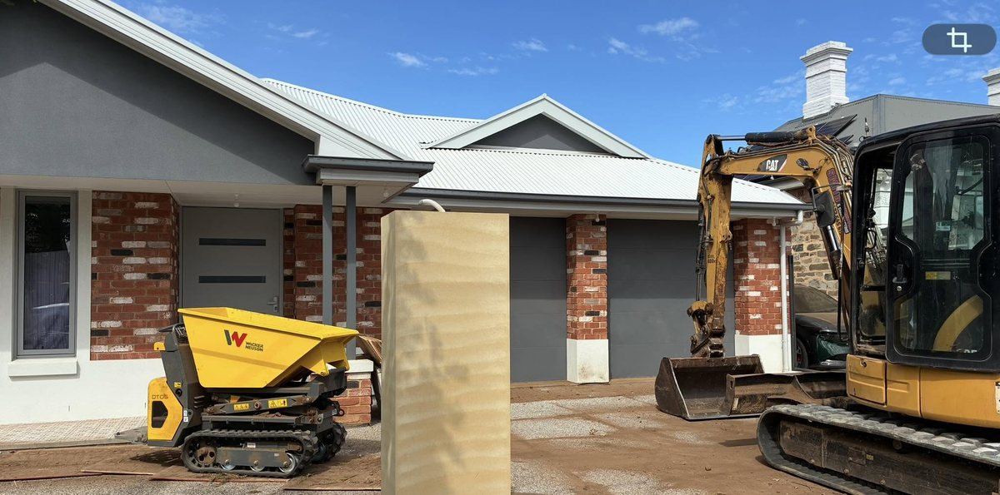
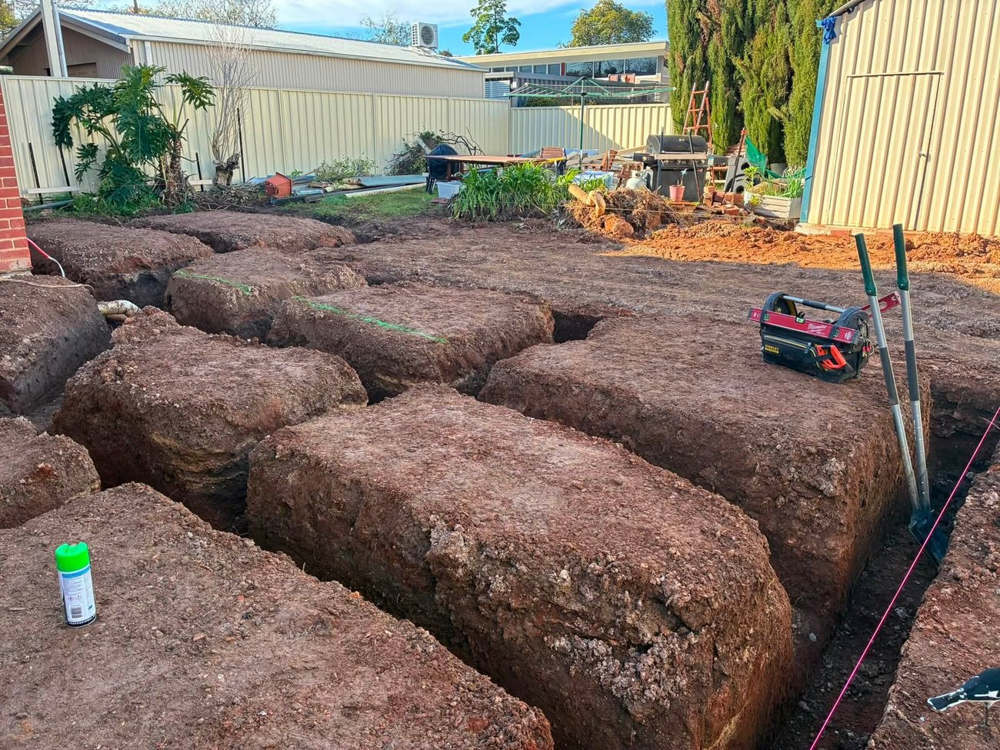
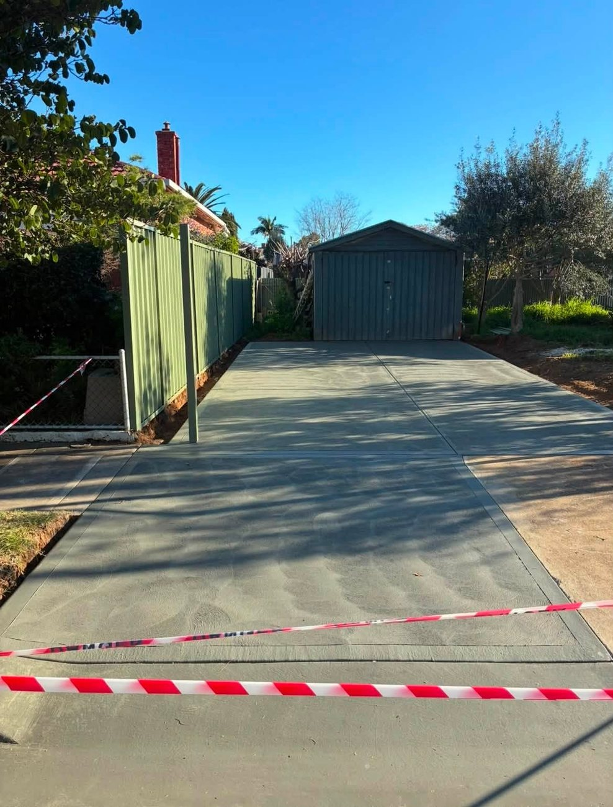

Site cuts & earthworks
Excavation, levelling, trenching and site prep done clean and to plan.
What we do
Three trades, one crew — so nothing gets lost between the dig and the design.
Excavation, levelling, trenching and site prep done clean and to plan.
Driveways, paths and slabs finished in exposed aggregate and specialty finishes.
Footings, base prep and set-out ready for the next trade — measured, checked, documented.
Trenching, agi lines and stormwater run-off handled before the concrete goes down.
Structural and feature walls that hold the levels and frame the space.
Planting, screening and finishing touches that turn ground work into a front yard.
How we work
No handoffs, no finger-pointing — the same team owns the whole result.
01
We look at the site together, talk levels and what you want to end up with.
02
Clear scope, measured set-out and a start date you can plan around.
03
Machines, concrete and detail work — staged cleanly, neighbours considered.
04
Final levels checked, site tidied, finished exterior handed over.
Why EDLC
One team owns every stage — the levels match the concrete matches the garden.
Excavators and dumpers on hand, so nothing waits on hire gear or weather gaps.
Working across Adelaide — recent jobs include full base preparation in Mitcham.
We are called Excavation & DESIGN for a reason — the last 10% is the point.

EDLC — Excavation & Design Co, Adelaide.
Recent work
From base preparation to finished exterior — a look at recent Adelaide jobs.






Photos from recent jobs — more on request.
Request a quote
Message us on Facebook with your address and a rough idea — photos of the site help. We will come out, talk it through and quote it properly.
Message us on Facebook — EDLC
Or use the quote form above — it lands straight with the crew
Adelaide, SA · earthworks, exposed concrete & exterior design